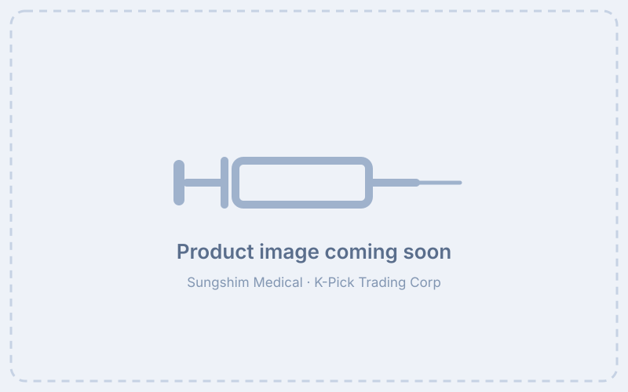

FILTER NEEDLE
The filter needle is a single-use needle fitted with a filter designed to reduce particulates of glass, rubber, and other contaminants larger than 5 microns as medication is drawn up.
It is intended for aspirating medication only. Before injecting into the human body, the filter needle must be replaced with a new sterile single-use needle.

- Reduces particulates of glass, rubber, and other contaminants larger than 5 microns
- For single use only; do not resterilize or reuse
- To be used only by medical personnel properly trained on this product
| Size | Inner Box | Carton Box |
|---|---|---|
| 18G | 100 pcs | 10,000 pcs |
For other sizes, please contact us.
-
Preparation
- Make sure the package and contents are intact, and check the sterilization status and expiration date before use.
- To open the blister package, peel back the top layer of packing.
-
Usage Procedure
- Seat the filter needle firmly on the syringe with a push and a clockwise twist.
- Carefully remove the filter needle cover.
- Aspirate the medication with the filter needle, then remove the filter needle.
- Identify where the medication is to be injected. When injecting into the human body, replace the filter needle with a new sterile single-use needle before injecting.
- Use once and discard immediately in accordance with local safety standards.
- This product is intended for single use only; do not resterilize or reuse.
- Use once and discard immediately in accordance with local safety standards.
- Store at room temperature and in a dry and dark place.
Warnings
- For single use only. Do not resterilize or reuse.
- Do not use other than medical personnel who have been properly trained on this product.
Precautions
- Keep the product clean when using. Avoid damaging the product and physical impact.
- Do not use if the expiration date has passed.
- Store at room temperature and in a dry and dark place.
This product is a single-use needle fitted with a filter, used to filter the injection fluid as the medication is drawn up prior to administration.
- Shelf Life: 3 years from the date of manufacture
- Packaging: Individual sterile blister packaging
- Storage Conditions: Store at room temperature and in a dry and dark place
Note: This is a medical device. Please read all instructions and safety guidelines carefully before use.